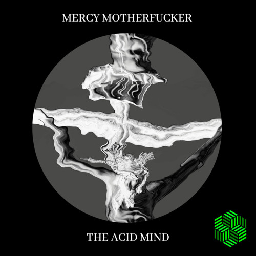
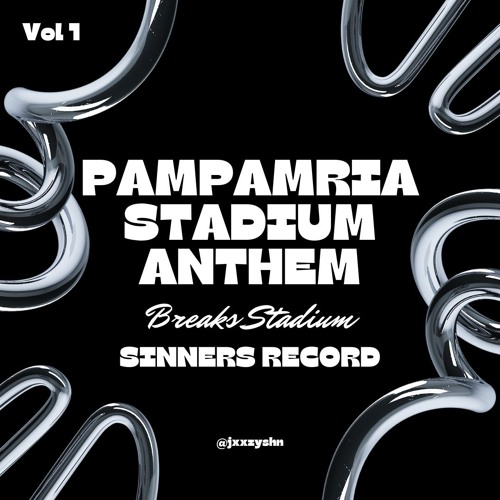

Dutch
Bounce-driven club energy
FUN. FLY. ENJOY.
Indonesia-based DJ, producer & music editor. High-energy, genre-fluid, crowd-driven performance.

Use this live dossier for artist information and booking. Download the new 22-page Racing V4 PDF for promoter use. It includes clickable music links, media links and QR codes. Print / Save PDF produces a separate browser printout of this web dossier.

JXXZY adalah DJ, producer, dan music editor asal Indonesia dengan karakter set high-energy dan genre-fluid. Musiknya bergerak melalui Dutch, Jungle Dutch, Breakbeat, Breakfunk, Techno, Indonesian Bounce, Baile Funk, Brazilian Funk, Bolha, serta crossover club sounds. Personal edits, mashups, bootlegs, dan live reworks menjadi bagian penting dari identitas performanya, dengan fokus pada flow, respons crowd, dan momentum dancefloor.
JXXZY is an Indonesia-based DJ, producer, and music editor with a high-energy, genre-fluid performance style. His sets move through Dutch, Jungle Dutch, Breakbeat, Breakfunk, Techno, Indonesian Bounce, Baile Funk, Brazilian Funk, Bolha, and crossover club sounds. Personal edits, mashups, bootlegs, and live reworks are central to his identity, with an emphasis on flow, crowd response, and dancefloor momentum.
Bounce-driven club energy
Percussive and tribal movement
Broken rhythm and bass momentum
Funk and playful bounce
Pressure, drive and peak tension
Local recognition with club energy
Brazilian percussion and raw bass
Fast, rhythmic, club-forward sound
Brazilian-influenced bounce
Momentum built intentionally
Cross-scene transitions keep the flow
Track choice responds to the room
Personal edits shape the set
Open — Atmosphere
22 tracks and sets
No matching tracks. Try a different title or platform.








Jakarta / Club
Bandung / Club
Jakarta / House party
Jakarta / House party
Jakarta / Club
Cimahi / Rooftop event
Private event / Wedding
Event format
Event format
Event format
Event format
Event format
Event format
Event format
Event format
For confirmed dates and availability, contact management or follow official channels.
Check availability ↗Professional Pioneer DJ / AlphaTheta ecosystem preferred.
Professional 4-channel mixer preferred.
Dedicated booth monitor with accessible level control.
Professional FOH with adequate sub-bass and headroom.
Stable, grounded, protected power.
Stable surface, sufficient space, secure crowd separation.
Up to 10 persons
2 bottles Jameson
Standard mixers included
Water + soft drinks
Secure artist area preferred
Transport & accommodation when applicable
Soundcheck: verify audio routing, booth monitor, power and player/mixer operation. Hospitality depends on venue policy, local law, travel and final agreement.
Request full rider ↗Confirm the DJ setup and mixer, supported media format, booth monitoring, power, soundcheck window, load-in route, set time, onsite contact and guest access in writing. Equipment substitutions, transport and accommodation are subject to prior agreement.
Open interactive rider checklist ↗JXXZY adalah DJ, producer, dan music editor asal Indonesia dengan karakter set high-energy dan genre-fluid. Musiknya bergerak melalui Dutch, Jungle Dutch, Breakbeat, Breakfunk, Techno, Indonesian Bounce, Baile Funk, Brazilian Funk, Bolha, serta crossover club sounds. Personal edits, mashups, bootlegs, dan live reworks menjadi bagian penting dari identitas performanya, dengan fokus pada flow, respons crowd, dan momentum dancefloor.
JXXZY is an Indonesia-based DJ, producer, and music editor with a high-energy, genre-fluid performance style. His sets move through Dutch, Jungle Dutch, Breakbeat, Breakfunk, Techno, Indonesian Bounce, Baile Funk, Brazilian Funk, Bolha, and crossover club sounds. Personal edits, mashups, bootlegs, and live reworks are central to his identity, with an emphasis on flow, crowd response, and dancefloor momentum.
JXXZY — Indonesia-based DJ / producer delivering high-energy, genre-fluid club sets with exclusive edits and crowd-driven selection.
MAKE SOME NOISE FOR — JXXZY. FUN. FLY. ENJOY.
Use the official spelling JXXZY and pronunciation Jexsiii. Preserve the logo proportions and its racing color identity; avoid stretching, recoloring or placing it on unreadable backgrounds. Please confirm promotional artwork and event announcements with management before publication.
Official web-ready media for approved event promotion. Request print-resolution or VJ source files directly from management.
Full media center ↗Send event name, date, city, venue, format, anticipated capacity, proposed set duration and contact.
Confirm availability, fee, scope, travel and agreed production requirements with management.
Share the confirmed schedule, soundcheck, DJ setup, backstage arrangements, and onsite contact.
Confirm final stage time and event logistics. Booking is confirmed only by mutual agreement.